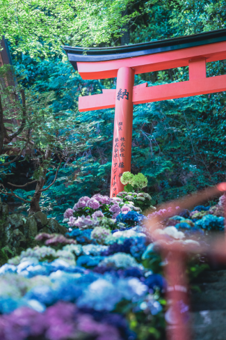
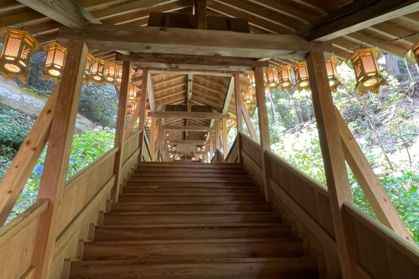
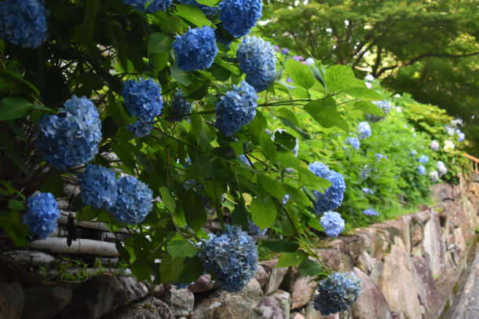
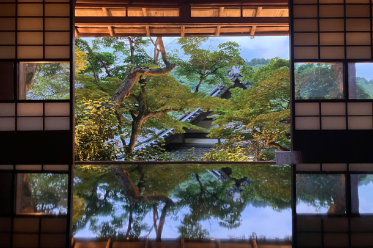
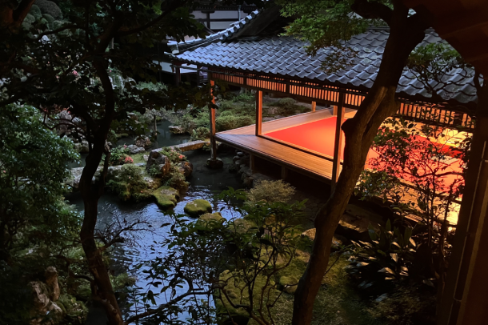

最新の情報は 公式サイトのツアーページ をご覧ください。
こころうつし ―まだ言葉にならない想いに、そっと触れる―
※大人・子ども同額・拝観料込み
※1名様からご予約いただけます。
※拝観時はドライバー同行いたしません。
| 1名参加 | 50,000円 |
| 2名参加 | 35,000円 |
| 3名参加 | 25,000円 |
| 4～5名参加 | 20,000円 |
本ツアーの募集は終了いたしました
＜MKトラベルTOPはこちら▶＞
＜おすすめツアーはこちら▶＞
「花手水」や紫陽花の名所として知られる柳谷観音楊谷寺を、閉門後に1日1組限定で特別貸切拝観。
他に誰もいない境内を彩る色とりどりの紫陽花を眺めながら、夕暮れとともに静けさが深まる特別な時間をお過ごしいただきます。
京都府指定名勝の庭園“浄土苑”は少し照明を用意します。昼間とは違う空間で自由におくつろぎください。
最後に、お寺の方と一緒に雨戸を閉めて一日を締めくくります。
一日の終わりに、静寂に包まれたお寺で心を整える―観光では味わえない、この時期だけの特別な体験をお楽しみください。
| おすすめポイント |
| ・1日1組限定の特別貸切。拝観閉門後の静かな柳谷観音をゆったり満喫。 ・紫陽花が美しく彩る季節。昼間とは異なる、静かで幻想的な雰囲気を味わえます。 ・上書院・浄土苑など全て貸切のため自由に過ごせます。 |
行程
| 時間 | 場所 |
| 17:00 | 京都駅八条口MKタクシーのりば |
| 18:00 | 柳谷観音 楊谷寺（到着） |
| ・境内散策（担当者がご案内します） | |
| 19:45 | 柳谷観音 楊谷寺（出発） |
| 20:30頃 | 京都駅 |
※文化財保護のため、お庭への立ち入りはご遠慮ください。また、花手水・紫陽花・境内植物にはお手を触れないようお願いいたします。
※拝観時はドライバーは同行いたしません。
※渋滞等で、行程の入替や、予定通りの滞在時間をお取りすることができない場合がございます。予めご了承ください。
※気象状況により花の見ごろが前後する場合があります。見ごろをお約束した日程ではありませんので予めご了承くださいませ。
◆送迎エリア：京都市のみ
※京都市の次のエリアは本件対象外とさせていただきます。
・北区中川・小野・杉阪・真弓・大森・雲ヶ畑
・右京区京北・嵯峨清滝・嵯峨水尾・嵯峨越畑・嵯峨樒原
・左京区花脊・広河原・久多・大原
楊谷寺（イメージ）
-

-




」


写真はすべて過去に撮影したものです
【MKトラベルLINE公式アカウント】
MKトラベルの新規ツアー情報をLINEでお届けいたします

【各SNSでも京都の情報やツアー情報をお届けしています】


旅行条件
| ツアー番号 | AJLM06 |
| 出発地 | 京都市内 |
| 添乗員／ガイド | 添乗員：なし（乗務員がその業務を代行いたします） |
| 食事 | 0回 |
| 最少催行人数 | 1名（1日1組様限定／最大5名） |
お申込みについてのご注意
※1日1組様のみご参加いただけます。ご予約はお早めにお願いいたします。
※旅行条件・旅行代金は、2026年5月1日現在を基準としています。
※行程および帰着時間は交通事情などにより変更になる場合があります。
※お申込みの前に弊社の募集型企画旅行規約をご確認ください。
※本プランはリクエスト予約となります。ご予約確定後、担当者より改めてご連絡いたします
よくある質問
Q.1名ですが、申し込みできますか？
A.はい。お一人参加の方もたくさんいらっしゃいますので、お気軽にお申し込みください。
問合せフォームはこちら
本ツアーの募集は終了いたしました
＜MKトラベルTOPはこちら▶＞
＜おすすめツアーはこちら▶＞
【WEBシステムよりご予約の場合】
・クレジットカード決済
お支払方法詳細はこちら
お客様のご都合でご予約をキャンセルされる場合は、すみやかに下記お問合せ先までご連絡ください。
キャンセル料
11日目に当たる日以前
無料
10日目に当たる日以前
20%
7日目に当たる日以前
30%
旅行開始日の前日
40%
旅行開始日の当日
50%
旅行開始後又は無連絡
100%